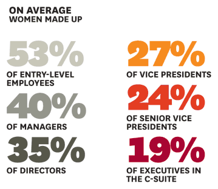
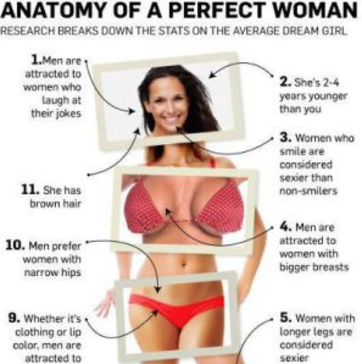

 Women remain unrepresented in the workplace, especially at senior levels. Women are less likely to advance in corporations, then men and face more barriers to senior leadership. A study called "Women in the Workplace" was conducted by Lean in. She resulted that in the rate of progress of the past three years, it will take over 100 years for all US corporations to achieve gender equality. The study revealed that despite the improvement of women in the workforce, women remain underrepresented at at every level of the corporate industry. Women experience uneven playing fields, with their odds of advancement, in the workplace, lower at every level. Men get more of the critical assignments that lead to advancement that women do. According to a recent Catalyst study of 1,660 business school graduates, on average the men's project had budgets twice as big and three times as many staffers as the women's. Many people believe that women typically stop working to care for their children. However, a study was conducted by Hunter College professor Pamela Stone with 54 females high achievers recruited mostly from alumnae of four selective colleges and universities. The women pursued their careers for an average of 11 years. 60% worked past the birth of their second child. 90% left because of workplace problems, not to care for their children. Two-thirds of the women who left, tried part-time, but it didn't work out. Therefore, there are many different reasons as to why women aren't advance quickly in corporations, however, children is not one of those problems.
 Over the last few years little progress has been made for women in areas of news and entertainment. There are some places, like sports media, where women have lost representation. Representation of women in sports journalism has dropped from "17% to 10% in the last year" (times.com). "Two high-profile roles previously held by women — Diane Sawyer of ABC News and Jill Abramson of The New York Times—were changed in 2014,” said Julie Burton, president of the Women’s Media Center. “These veteran journalists were in positions of power at media giants, shaping, directing and delivering news. Both women were replaced by men" (time.com). The news industry has yet to require equality between men and women.Women are on camera only 32% of the time in evening broadcast news, and write 37% of print stories news stories. At the New York Times, more than 67% of bylines (a byline is a line in the newspaper naming the writer of an article) are male. Men dominant hard news industries such as science coverage, orld politics coverage and criminal justice news. Hollywood executives are still overwhelmingly white and male. Latino characters are particularly underrepresented. The New York Times recently wrote that "Latinos are 17% of the U.S. population and buy 25% of movie tickets, but have less than 5% of speaking roles in films. There are no Latino studio or network presidents, and from 2012 to 2013, 69% of all maids were played by Latina actresses" (time.com). The world of media is a white male dominated industry. Every year women because less important to the industry. Especially women for minorities groups like hispanics or indians.